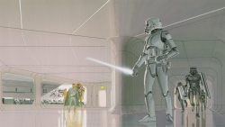
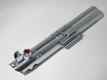
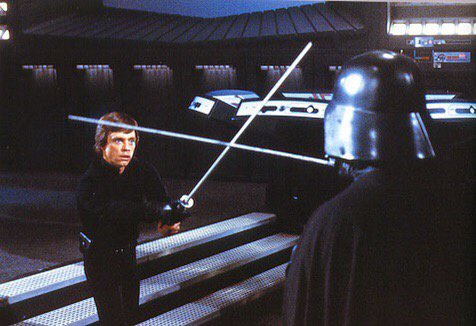
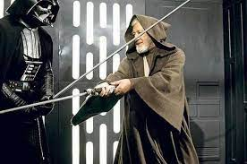
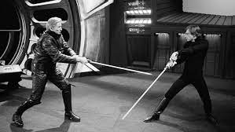

Korai Vázlatok

A fénykard használatát eredetileg olyan sorozatok inspirálták, amiket George Lucas gyerekként nézett
és szeretett, amikben sok kardot hordozó karakter volt. Amikor elkezdte kigondolni a Star Warst,
bele szeretett volna rakni kardokat, megalkotva a "fénykardot", hogy jobban kapcsolódjanak a
futurisztikus beállításhoz.
A Star Wars történetének korai megtestesülésében a fénykardok nem kizárólag a Jedikhez vagy más
Erő-használókhoz tartoztak, hanem valójában nagyon elterjedtek voltak. A fénykardokat ábrázoló korai
vázlatfestményeknél a lázadó és birodalmi katonák egyaránt viselték. George Lucas később a
fénykardokat a Jedikre korlátozta, hogy még egyedibben hassanak, és hogy kiemelje a Jedik
misztikumát. Valamint a forgatókönyv korai vázlataiban a fénykardokra „lézerkardok” szóként
hivatkozott.
A kristályok először csupán a markolatok beágyazott dekorációjaként jelennek meg a Star Wars-ban az
Egy új remény regényváltozatában. Eme egyedüli eseten kívül egyik filmben vagy annak
regényváltozataiban sincsenek megemlítve a kristályok.
Kellékdizájn

Az Egy új remény forgatása alatt az Anakin/Luke-fénykard egy Graflex kamera oldalához csatolható
vakujából készült, míg a Vader-fénykard egy Micro Precision Products vakutartozékból való. A
fogantyúmarkolatok gumi ablaktörlőkből készültek, és D formájú gyűrűket illesztettek az egységek
aljához, ezért övön is hordhatták azokat. Az Obi-Wan-fénykard volt akkor a legösszetettebb fénykard.
Egy Armitage Shanks Starlite Handweel modelljének (csap) alkatrészeiből, Browning ANM2 gépfegyver
gyorsítóból, egy első világháborús 3-as számú Mk.1-es brit nyeles gránátból és egy Rolls-Royce
Derwent Mk.8/Mk.9 sugárhajtású motor kiegyenlítő csövéből lett összeszerelve.
A fénykard effektek az eredeti trilógia alatt bonyolult módon indultak el. A IV. rész forgatása
alatt a pengét egy 3 oldalas rúdból készítették, amit visszatükröződő anyaggal burkoltak be. A rudat
egy kompakt motor forgatta a markolatban, a beállított fényeket visszaverve és egy ragyogó hatást
teremtve a kamera számára. Ugyanakkor ezekből a cölöpökből nagyon kevés volt; nehezek és törékenyek
voltak, gyakran eltörtek a harci jelenetek alatt. Valamint a ragyogó hatás nem volt teljes, mert
amikor a penge kiment a fényből vagy rámutatott a kamerára, a ragyogás eltűnt és csak a forgó rúd
látszódott. Hogy praktikusan kompenzálják ezt, a penge rotoscoping eljárás alá került és egy animált
rudat adtak hozzá azzal, hogy ceruzával rárajzolták a test felnagyított kópiáját és egyenként
tintával kiszínezték. Ennél a fázisnál kaptak a pengék színeket, mivel a cölöpök egyszerű fehér
pengék voltak.
Effektek

A Birodalom visszavág forgatása alatt rájöttek, hogy egy kamerán belüli ragyogó hatás
elkészítése több bajjal jár, mint haszonnal, ezért a forgó rudakat szén-rudakra cserélték le.
Míg ezek az új pengék kevésbé ormótlanok voltak, mint az előttiek, még mindig nagyon törékenyek
voltak és gyakran kettétörtek. Ugyanakkor még A Jedi visszatérnél is ezeket használták.
Amikor a Baljós árnyak forgatása megkezdődött, az új fénykard pengék tartós acél- és
alumínium-rudak voltak, de gyakran meghajlottak és elgörbültek, folyamatos pótlást igényelve.
Ennek ellenére ezeket a rudakat használták A klónok támadása című résznél is, mivel nem volt más
alternatívájuk akkor. Jóllehet A Sith-ek bosszúja forgatásához a pengéket szénszálas rudakra
cserélték, amiket üveggel és műanyaggal lamináltak. Ezek az új cölöpök sokáig kitartottak és nem
hajlottak el, de emiatt rendkívül kemények voltak, és gyakran okoztak zúzódásokat és hagytak
hegeket. Míg a fénykard effekteket még mindig rotoscope eljárással készítették az előzményeknél,
inkább digitálisan tették, mint kézzel.
Színek

Az első két filmben szereplő fénykardoknál (Egy új remény, A Birodalom visszavág) a pengéket kékkel
(a Jediknél) és vörössel (a Sith-eknél) színezték be. Ennek a színeltérésnek a döntése az
utómunkálatok során született meg, amikor a fénykard pengéket rotoscope eljárás alá vették, mivel az
eredeti pengék egyszerűen fehérek voltak. A Jedi visszatérnél Luke Skywalker újonnan megépített
fénykardját kékre színezték a film előzetes vágása alatt, ami a korai mozis előzetesnél és a
hivatalos moziplakátoknál meg is jelent, de a végső filmben végül zöldre színezték, hogy
kontrasztban álljon a Tatuin kék egével a szabadtéri jeleneteknél. Valamint zöldként jelent meg az
újra kiadott posztereken.
A zöld a Jedik fénykardjainak egy másik szabványos pengeszíne a Star Wars előzmény-trilógiánál. Mace
Windu lila pengéjű fénykardja, ami először A klónok támadásában látható, egy személyes kérés volt a
színész Samuel L. Jackson részéről, hogy a karaktere kirívó legyen a többi Jedi közül. Jackson
kedvenc színe a lila és gyakran igényli az általa eljátszandó karaktereknél a szín egyik elemének
használatát.
Koreográfia

Míg a fénykardok használatát eredetileg az olyan George Lucas által kedvelt régi sorozatok ihlették,
amikben hosszú tőrök voltak, a végső koreográfia a IV. résznél nem vívásnak nézett ki. Mivel a
Jediket és az ellenfelüket, a Sith-eket igazából a szamurájok inspirálták, a használt küzdőstílusok
inkább a kendón alapultak. A kendo lassabb, erő-orientált mozdulatait használták fel a párbajban,
ami ötvözte Lucas elgondolását, mivel a harc lényegében két öregember között zajlott.
A Birodalom visszavág forgatásánál Lucas elkezdte felpörgetni a párbajok sebességét, „gyorsabbá és
intenzívebbé” téve azokat, és az ötlet az volt, hogy Luke Skywalker egyre jártasabb lesz a
fénykarddal. Valamint ahelyett, hogy David Prowse-t, a Darth Vader jelmezbe öltözött színészt
használták volna fel a párbajoknál, egy profi kardforgató, Bob Anderson működött közre a
párbajoknál, mert Prowse folyamatosan eltörte a törékeny cölöppengéket. Sőt, Anderson Prowse harci
dublőrje lett A Jedi visszatér forgatása alatt.
Amikor a Baljós árnyak forgatása elkezdődött, az új kaszkadőr koordinátor, Nick Gillard felpörgette
a sebességet és az agilitást, amit a karakterek demonstráltak a fénykard-párbajokban. Az ötlet
szerint az előzmények akkor játszódnak, amikor a Jedi Rend a „virágkorát élte”, még a harci
technikák terén is. Gillard óvakodott attól, hogy a harci jelenteknek koreografált kinézetet adjon,
és felhasználta a harcművészeti tudását a mozdulatok megalkotásához. A végeredmény egy nagyon gyors
harcstílus volt, amit ő egy nagy mesterek közötti sakkjátszmának írt le, ahol minden mozdulat sakk.
A koreográfia ezen stílusa jellemző volt az egész előzmény-trilógiánál.